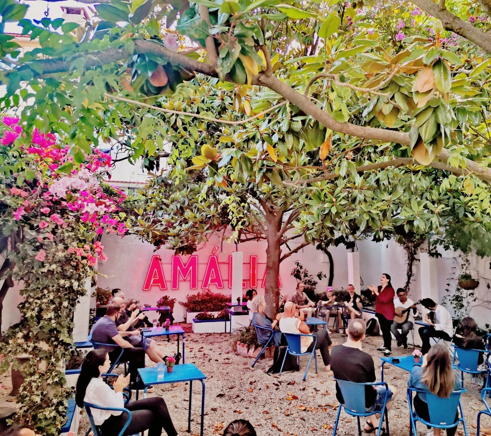

Chico Rodrigues não é apenas um papagaio, é um pedaço vivo da história de Amália Rodrigues. Com 30 anos, vive atualmente no jardim da Casa-Museu Amália Rodrigues, em Lisboa, onde é tratado com todo o carinho por quem lá trabalha. Viveu durante oito anos ao lado da fadista, que o adorava e que o ensinou a cantar e assobiar. Desde a morte de Amália, em 1999, Chico permaneceu como símbolo afetivo da relação entre Amália e os seus animais, encantando quem o visita.


Além de dançar, Chico também fala. Às vezes, chama pela Amália. Noutras, fala do Caruso, um dos cães da fadista, ou até pede “papinha”. São frases que ele guarda desde o tempo em que vivia com a cantora e que hoje tornaram-se parte da visita à Casa-Museu. Fala apenas quando quer, como qualquer estrela, mas nunca deixa de surpreender os visitantes com a sua personalidade cativante.
O chico é uma prova viva de que o amor prevalece. É também um pedaço de Amália que demonstra a atenção às pequenas coisas que a mesma demonstrava. O facto do Chico reconhecer a voz da dona ao se tocar uma música da mesma é algo que fascina qualquer pessoa que o visite.


Amália teve vários animais ao longo da vida e sempre manteve com eles uma relação muito próxima. O Chico foi especial. Era a ele que ia ver assim que acordava, e foi ela quem lhe ensinou o “raspa”. Curiosamente, Chico herdou o nome de outro papagaio que Amália já tivera, mostrando o seu carinho pelas aves. Depois da sua morte, duas funcionárias que já cuidavam de Chico continuaram na fundação para garantir que se sentia em casa. Mais de vinte anos depois, continua saudável, alegre e cheio de vida.
A Casa-Museu Amália Rodrigues está aberta ao público de terça-feira a domingo, das 10h às 18h. Todas as visitas são guiadas, com bilhetes a 4,5€ para estudantes até aos 25 anos e 7€ para adultos, existindo também descontos para grupos. Para conhecer o Chico, basta marcar visita através do número telefónico +351213971896 ou do endereço e-mail: casamuseu@amaliarodrigues.pt. O Chico não é apenas uma ave, é o guardião afetuoso da memória de Amália. Uma personagem encantadora que continua a contar, com penas e palavras, uma das mais bonitas histórias da música portuguesa.
